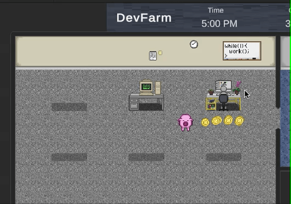

Academic Projects
Video Game Development: Dev Farm
•Created a web-based video game in Unity and C++ with a team of 4 software engineers.
•Leveraged iterative lifecycle for development using agile and scrum methodologies
•Game designed as a “reverse farm” simulator where you play as a farm animal and manage a team of software developers to work on projects at your office
